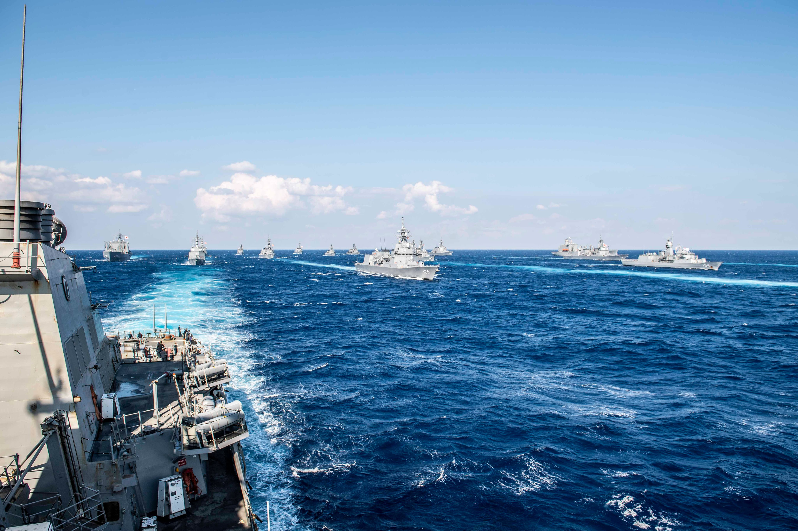
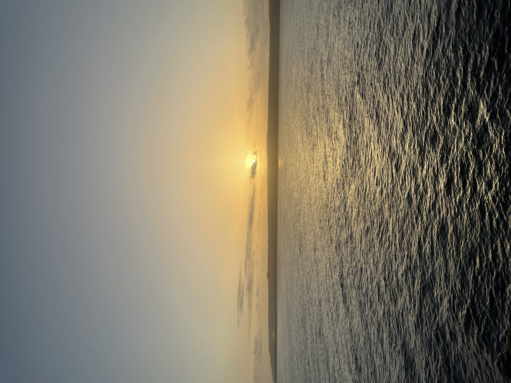
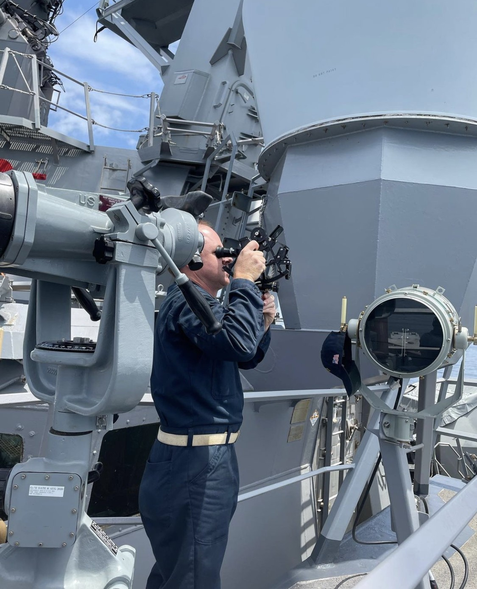

Quartermasters support the Officer of the Deck and Navigator in all navigation procedures on the ship's bridge. They ensure the ship's safe navigation, maintain reliable communication with other vessels and shore tations, monitor and record weather conditions, and conduct celestial navigation observations. Additionally, they are responsible for maintaining ECDIS-N systems, charts, visual signaling instruments, weather monitoring equipment, and keeping records for the ship's log.

Upon graduating from "A" school, USN Quartermasters are deployed to various types of ships. Full-Time Support (FTS) Quartermasters are stationed on Naval Reserve Force (NRF) ships within the continental United States (CONUS). After completing their sea tours, FTS Quartermasters are assigned to reserve centers across the nation, including inland areas. At these reserve centers, they are responsible for training and managing Selected Reserve Personnel. Over a 20-year Navy career, Quartermasters typically spend about 60 percent of their time on fleet units and 40 percent at shore stations.

| Pay Grade | Certifying Agency | Credential Title |
|---|---|---|
| E4 | United States Coast Guard | National Able Seaman |
| E5 | United States Coast Guard | National Mate 200 GL and Inland |
| E7 | United States Coast Guard | National 3rd Mate Unlimited OC or NC |